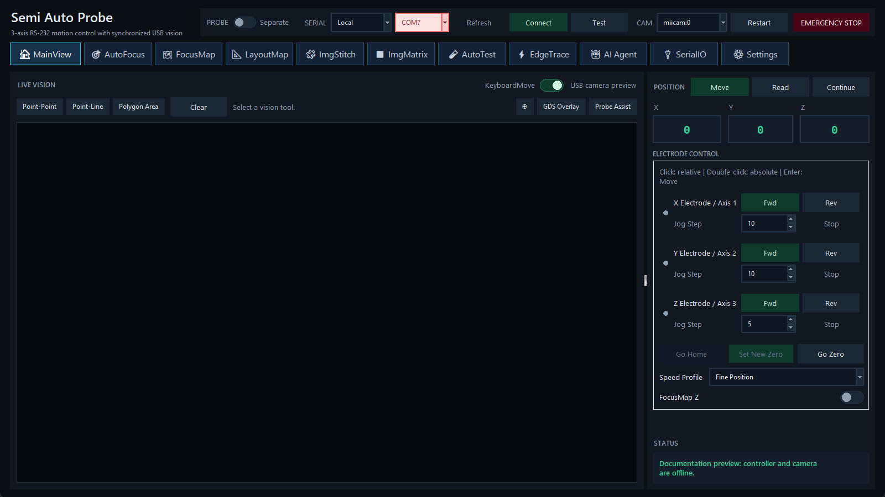

前置条件
- 顶栏 Serial 已连接；相机预览需要 CAM 已启动并产生有效 frame。
- Settings 中的轴映射、方向和速度已验证。基于像素或微米的移动还需要当前 objective/eyepiece 的 pixel calibration 与载台换算参数。
- 横向运动前确认 Probe 为 Separate。
Live Vision
主画布显示最新相机帧。Point-Point、Point-Line 和 Polygon Area 用于图像标注与测量；Clear 清除当前选择。GDS Overlay 在已有 LayoutMap 映射时叠加版图；Probe Assist 提供探针定位辅助。
图像坐标转换依赖保存的像素标定、相机 FOV rotation 与载台方向。若状态提示 calibration required，先到 Settings 完成标定。
Position：Move、Read、Continue
- Move：显示目标输入。单击 X/Y/Z 数值进入 Relative 输入；双击进入 Absolute 输入。Enter 执行，Esc 清除，Tab/Shift+Tab 切换轴。
- Read：读取控制器位置并更新 X/Y/Z。
- Continue：开启/暂停周期性位置读回。自动流程开始时可能临时暂停实时读回，结束后恢复。
坐标单位。主位置与 Agent stage_move 使用控制器 pulse 整数。Absolute 的 0 是当前控制器坐标零点，不代表机械限位。
Electrode Control
每轴可设置 jog step，使用 Fwd、Rev 和 Stop。Fwd/Rev 的物理方向取决于 Settings 中的 motor mapping 与 axis direction。首次配置后应以小步长逐轴验证。
- Set New Zero：把当前位置定义为 X/Y/Z 零点，受 Admin 保护。
- Go Home：执行控制器 homing，受 Admin 保护；其含义取决于控制器协议和现场机构。
- Go Zero：移动到控制器坐标 X=Y=Z=0，不是寻限位。
- Speed Profile：Fast、Fine、Safe 使用 Settings 保存的速度比例。
- FocusMap Z：启用后，XY 目标会从当前焦平面计算 Z；手动 Z 输入和滚轮 Z 被锁定。
KeyboardMove
开启后，默认方向键控制 XY，PageUp/PageDown 控制 Z；也可在 Settings 改为 WASD/QE。长按会逐步缩短重复间隔。Alt+X/Y/Z 循环对应轴的 jog step。只有 MainView 且焦点不在文本输入控件时才会运动；完整表见 快捷键。
正常结果与停止
每次动作应产生命令状态、终止状态和位置读回。单轴 Stop 会向对应控制器轴发送停止；当前版本的自动位置刷新存在已知错误，停止后请手动单击 Read 核对位置。紧急情况使用顶栏 EMERGENCY STOP，然后按 恢复检查 操作。
相关主题：SerialIO · FocusMap Z · 运动与光学校准